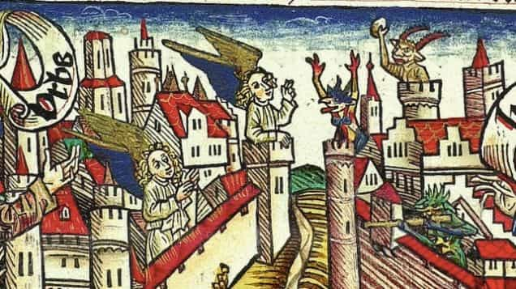

Daryush "Roosh" Valizadeh created ROK in October 2012. You can visit his blog at RooshV.com or follow him on Twitter and Facebook.


How would you feel if you spent most of your life working, having children, and trying to make a difference, only to come to the conclusion in old age that it was all for nothing and that there was no meaning to your life at all? That’s exactly what happened to Leo Tolstoy, who wrote a book called A Confession to describe his existential crisis and what he did in an attempt to resolve it.
Today or tomorrow sickness and death will come (they had come already) to those I love or to me; nothing will remain but stench and worms. Sooner or later my affairs, whatever they may be, will be forgotten, and I shall not exist. Then why go on making any effort? How can man fail to see this? And how go on living? That is what is surprising! One can only live while one is intoxicated with life; as soon as one is sober it is impossible not to see that it is all a mere fraud and a stupid fraud! That is precisely what it is: there is nothing either amusing or witty about it, it is simply cruel and stupid.
Back in his time of the 19th century, he saw four ways that people were handling this problem.
1. Ignorance. “It consists in not knowing, not understanding, that life is an evil and an absurdity. People of this sort — chiefly women, or very young or very dull people — have not yet understood that question of life which presented itself to Schopenhauer, Solomon, and Buddha.” Believers in God fit within this category.
2. Epicureanism and pleasure. “[This] is the way in which the majority of people of our circle make life possible for themselves. Their circumstances furnish them with more of welfare than of hardship, and their moral dullness makes it possible for them to forget that the advantage of their position is accidental, and that not everyone can have a thousand wives and palaces like Solomon.”
3. The “strength” to commit suicide. “Having understood the stupidity of the joke that has been played on them, and having understood that it is better to be dead than to be alive, and that it is best of all not to exist, they act accordingly and promptly end this stupid joke, since there are means: a rope round one’s neck, water, a knife to stick into one’s heart, or the trains on the railways.”
4. Weakness. “It consists in seeing the truth of the situation and yet clinging to life, knowing in advance that nothing can come of it. People of this kind know that death is better than life, but not having the strength to act rationally — to end the deception quickly and kill themselves — they seem to wait for something.”
Tolstoy came to a conclusion that many of us have realized, but forcefully pushed to the wayside by distracting ourselves with various goals and entertainments. We have erected walls around our minds that prevent us from asking the big questions and acknowledging life’s meaninglessness, and instead have embarked on an escalating hunt for satisfying pleasures and achievements. I did this myself for over a decade until I reached a limit of what pleasure could give me.
Tolstoy stumbled upon an interesting paradox whereby human reason is the rejector of life. The argument follows thusly…
1. There is nothing higher to a human than his reason. Without reason, a man could not perceive or sense life.
2. Reason is therefore the creator of a man’s life, because it allows him to experience it.
3. Reason is also what allows a man to reject his life and commit suicide, thereby ending it.
4. Reason is both the creator and destroyer of life.
He concludes that the best way to prevent a man from prematurely ending his life is to believe in “irrational” beliefs such as God. Therefore man must trick his reason to believe in “myths” that allow him to continue valuing his life and existence. This suggests that having too much reason is harmful to your life, and may end it prematurely.
Rational knowledge presented by the learned and wise, denies the meaning of life, but the enormous masses of men, the whole of mankind receive that meaning in irrational knowledge. And that irrational knowledge is faith, that very thing which I could not but reject. It is God, One in Three; the creation in six days; the devils and angels, and all the rest that I cannot accept as long as I retain my reason.

While Tolstoy portrays having faith as ignorant, he concedes that it appears to be a necessity for human life to prevent the suicidal tendencies that he found himself in.
Faith still remained to me as irrational as it was before, but I could not but admit that it alone gives mankind a reply to the questions of life, and that consequently it makes life possible.
[…]
Looking again at people of other lands, at my contemporaries and at their predecessors, I saw the same thing. Where there is life, there since man began faith has made life possible for him.
Faith is therefore a requirement of life. If you reason yourself into forgoing faith, in which you scientifically conclude that there is no rock-solid proof of God, you will certainly face an existential crises that makes you question your own life and how to live in a way that doesn’t cripple you, take you down the road of senseless hedonism, or motivate you to commit suicide.
Tolstoy argues that outside of faith, it’s impossible to find meaning in your life that justifies existence. Many men have tried but have not come up with something greater than faith in allowing humans to live with purpose while being free of debilitating malaise and fatalism.
He decided that he was in no position to examine the meaning of life because he was actually an aberration, an absurd entity, for denying life in the first place. He was not qualified to arrive at the correct answer. In other words, if you are pursuing the sins and evils of life, it will be impossible for you to see life’s true meaning.
What if an executioner passing his whole life in torturing people and cutting off their heads, or a hopeless drunkard, or a madman settled for life in a dark room which he has fouled and imagines that he would perish if he left — what if he asked himself: “What is life?” Evidently he could not offer reply to that question than that life is the greatest evil, and the madman’s answer would be perfectly correct, but only as applied to himself. What if I am such a madman? What if all we rich and leisured people are such madmen?
You would not ask a parasite, which he considered himself, what life is, because it is a parasite that tries to hurt others or steal from them. He then compares us to laborers who angrily question the farm owner (God) why a certain task on the farm must be completed without seeing the complete picture of how the farm works. We are only exposed to a tiny part of the farm, and after not liking what we see, or not doing the job the owner demanded, we declare the whole thing as a sham, jumping to conclusions from limited information and experience.
Tolstoy then made the conscious decision to seek out God:
Though I was quite convinced of the impossibility of proving the existence of a Deity (Kant had shown, and I quite understood him, that it could not be proved), I yet sought for god, hoped that I should find Him.
[…]
Every man has come into this world by the will of God. And God has so made man that every man can destroy his soul or save it. The aim of man in life is to save his soul, and to save his soul he must live “godly” and to live “godly” he must renounce all the pleasures of life, must labour, humble himself, suffer, and be merciful.
He was unable to suspend his reason completely, and had disagreements with the Orthodox Church for perverting Christ’s teachings. This led him to eventually form his own sect called the Tolstoyan movement, which was based on passivity and lack of private land ownership.
Tolstoy’s deus ex machina transformation into a believer will probably not be sufficient for atheists today who lack meaning in their lives. As a man who is in between atheism and faith, his arguments do not easily allow me to jump into faith, but at this point I wonder if I even need further justification.
I know that for the health of my sanity, my tribe, and my nation, faith will be required, especially since a strong and healthy nation without faith is a fantasy concept that history has not shown to be possible, at least not in the modern era. Whether God is the absolute truth or not, He seems to be a requirement for a sane and purposeful life. I want to believe, and maybe one day, I just will.
This article was originally published on Roosh V.
Read More: “A Confession” on Amazon